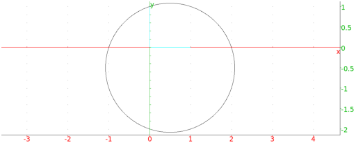

13.11.5 Circumscribed circles: circumcircle
The circumcircle command creates the circumscribed circle of a
triangle.
-
circumcircle takes three arguments:
A,B,C, three points.
- circumcircle(A,B,C) returns and draws the circle
circumscribed about triangle ABC.
Example
Input:
circumcircle(-1,i,1+i)
Output:
